01
Descarga el juego
Desde tu computadora Windows, pulsa Descargar juego v17. Guarda el ZIP en Descargas. Si abriste el manual desde el teléfono, comparte el enlace con tu computadora: el instalador de esta guía se ejecuta en Windows.
Descarga el juego, prepara tu sesión y sigue cada paso a tu ritmo. Todo el manual en un solo lugar.
Puedes consultar esta página desde el teléfono o la computadora. No requiere que el dispositivo esté encendido. El juego se descarga y se ejecuta localmente en Windows.
Para probar con electrodos, utiliza únicamente la configuración de alimentación, aislamiento y colocación validada por el responsable del equipo. Esta guía incluye un esquema orientativo de colocación de electrodos, que debe validar el responsable del proyecto.
Marca los pasos completados. Tu avance se conserva en este navegador.
Desde tu computadora Windows, pulsa Descargar juego v17. Guarda el ZIP en Descargas. Si abriste el manual desde el teléfono, comparte el enlace con tu computadora: el instalador de esta guía se ejecuta en Windows.
Haz clic derecho sobre EMG_Rehab_Arcade_v17.zip y selecciona Extraer todo… / Extract All…. Elige una carpeta y termina la extracción.
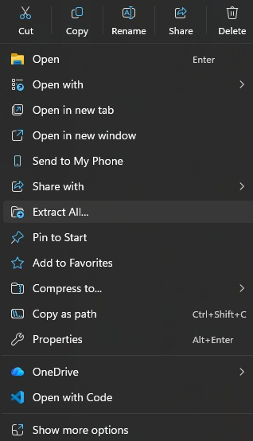
En la carpeta extraída, abre emg-rehab-esp32-final. Conserva juntos todos sus archivos y subcarpetas.
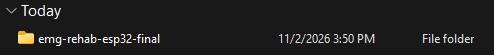
Haz doble clic en INICIAR_JUEGO.bat. Windows puede ocultar la extensión .bat y mostrar solo INICIAR_JUEGO. No lo ejecutes desde dentro del ZIP.
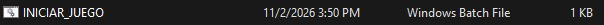
Si aparece este aviso, comprueba que abriste INICIAR_JUEGO.bat del paquete que acabas de descargar. Si reconoces el archivo, pulsa Ejecutar / Run. No necesitas desactivar el antivirus.
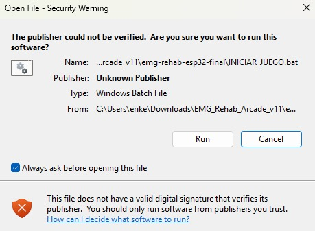
Se abrirá una ventana llamada EMG Rehab Server
y el juego aparecerá en el navegador. Puedes minimizar
esa ventana, pero déjala abierta. Si el navegador
no se abre, escribe http://localhost:8000/
en esa misma computadora.
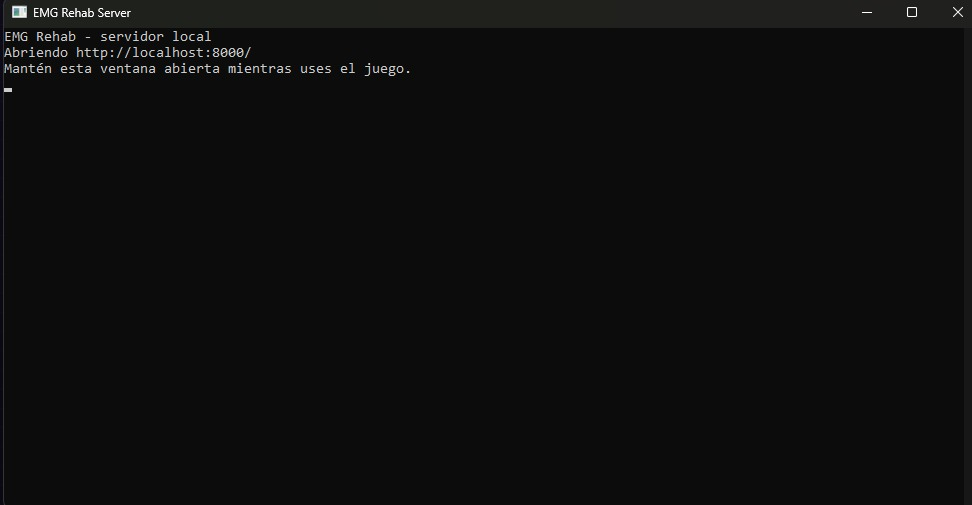
Con la piel limpia y seca, coloca los electrodos siguiendo la ubicación confirmada por el responsable del proyecto:
Confirma la conexión de cada cable y utiliza únicamente la configuración de alimentación y aislamiento validada para el equipo.
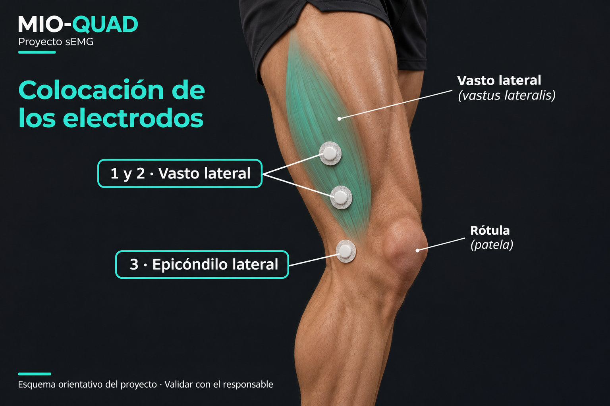
>
Con el equipo preparado por el responsable del proyecto,
enciéndelo y conecta el Wi-Fi de la computadora a
EMG-Rehab. Clave configurada:
12345678. Esta red puede indicar
“Sin Internet”: es la conexión local con el dispositivo.
Descarga el juego y abre este manual antes de
cambiar de red.

En el juego, pulsa CONECTAR MIO-QUAD. Espera el estado conectado y comprueba que llegan muestras. El dispositivo y el juego se comunican por Wi-Fi; esta página del manual es independiente.
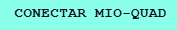
La etiqueta debe mostrar conexión activa y un contador de muestras/s distinto de cero. La captura de referencia muestra 24 muestras/s y el nombre antiguo “ESP32 conectado por WiFi”; corresponde al dispositivo Mio-quad.
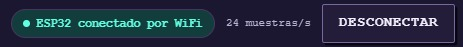
Selecciona un paciente o crea uno nuevo. Escribe el número de sesión y la cantidad de contracciones objetivo. Pulsa Iniciar sesión. Para capturas o pruebas compartidas, utiliza un nombre ficticio.
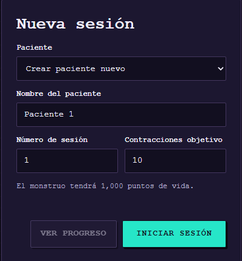
Pulsa Iniciar calibración y sigue las instrucciones: 3 s en reposo, tres contracciones cómodas de 3 s y descansos de 4 s entre ellas. Al finalizar, revisa los resultados y continúa al juego.
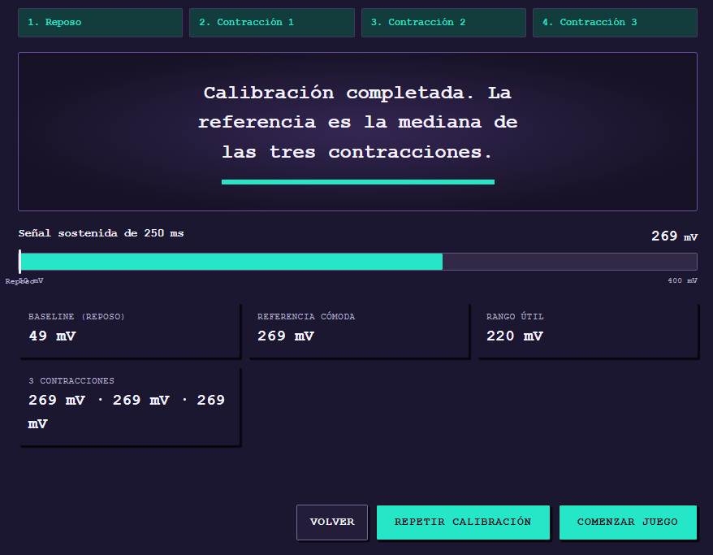
En la ventana del juego, abre el menú de los tres puntos de Chrome. En Zoom, pulsa el botón − hasta llegar a 80 %. Cierra el menú y presiona F11 para entrar en pantalla completa. En algunas laptops necesitarás Fn + F11. Para salir, vuelve a pulsar la misma combinación.
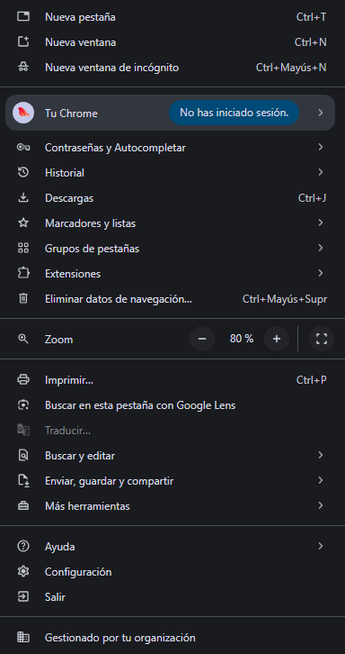
Supera el 50 % para atacar. El primer golpe aparece al detectar la contracción y los siguientes salen cada 1 segundo mientras mantengas ese nivel. Baja del 40 % y mantente relajado para cerrar la repetición. El dragón tiene tres fases; después queda tendido y sigue recibiendo golpes hasta completar el objetivo.
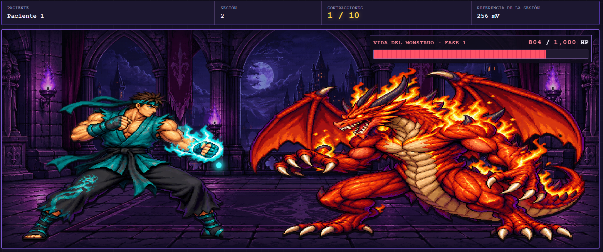
Al terminar, revisa la duración en segundos, golpes, daño y pico de cada contracción. En Ver progreso, despliega el detalle de una sesión. Exporta CSV para analizar los datos y JSON como respaldo. Los registros se guardan en ese navegador y computadora.
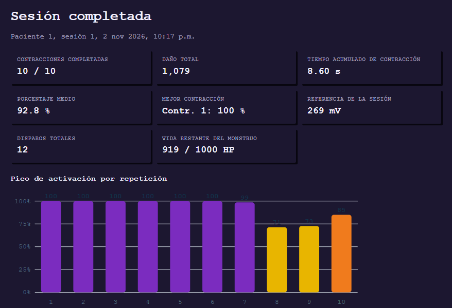
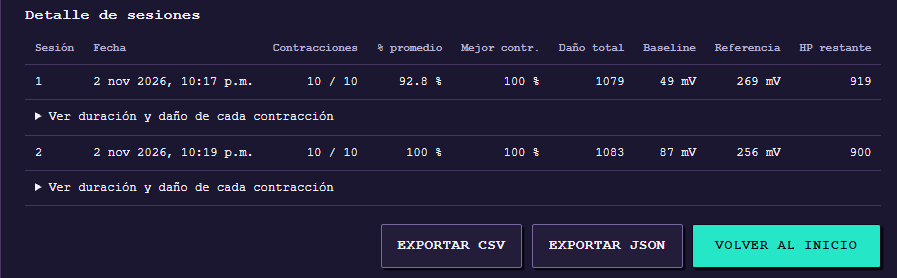
Cuando termines, desconecta Mio-quad desde el juego y ejecuta STOP_JUEGO.bat para detener el servidor local. Cierra la pestaña del juego.
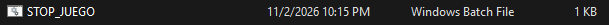
Comprueba que extrajiste el ZIP completo y que
INICIAR_JUEGO.bat y emg-server.exe están en
la misma carpeta. Mantén el servidor abierto
y prueba http://localhost:8000/
en el navegador de esa computadora.
Confirma que el Wi-Fi de la computadora sea EMG-Rehab y que Mio-quad siga encendido. Desconecta y vuelve a conectar desde el juego. Si no aparecen muestras, revisa el equipo con el responsable del proyecto.
La red del equipo no proporciona Internet. Consulta la guía desde el teléfono con datos móviles o abre la guía antes de cambiar de red. El juego local funciona sin Internet una vez descargado.
Usa el mismo navegador, perfil y computadora,
abriendo el juego en
http://localhost:8000/.
Evita el modo incógnito y no borres los datos
del navegador. Guarda respaldos JSON y
exportaciones CSV desde el juego.
Este paquete y su lanzador .bat están preparados para Windows. El teléfono sirve para consultar el manual y escanear el QR; esta guía no instala el juego en Android ni iPhone.